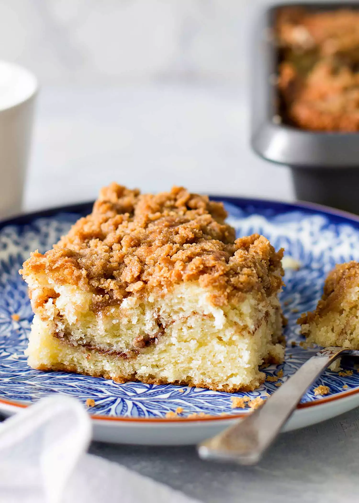

Coffee Cake

Crunchy, chewy goodness
This wonderful cake can be enjoyed anytime of the day. Althought there is zero coffee in the cake itself it does pair with coffee magically! The common theme of coffee cakes is the use of streusel and a topping of as much crumble as the cake will hold.
Tips for this recipe:
- Don't overmix the batter. It should be thick and pretty smooth, but some small lumps are fine. The batter is thicker than regular cake batter.
- To spread the top layer of batter without lifting it from the cinnamon sugar middle, grease a silicone or metal offset spatula.
- Use real butter for the crumb topping. Margarine or anything else will not give the same results.
- If your streusel topping is browning too quickly, tent the pan loosely with foil and move the cake to the lower third of the oven for the rest of the baking time.
Ingredients:
For the streusel topping:
- 1 cup brown suger, packed
- 1 cup all-purpose flour
- 1 teaspoon groung cinnamon
- Pinch of kosher salt
- 1/2 cup unsalted butter, softened
For the cinnamon layer:
- 1/4 cup sugar
- 1 tablespoon all-purpose flour
- 1/2 teaspoon ground cinnamon
For the cake batter:
- 3 cups all-purpose flour
- 2 1/4 cups sugar
- 3/4 teaspoon baking powder
- 1/2 teaspoon kosher salt
- 1 cup unsalted butter, softened
- 1 cup sour cream
- 1/4 cup whole milk
- 4 large eggs
- 1 tablespoon vanilla extract
Steps:
Preheat oven and prep the pan:
Preheat the oven to 350 degrees. Butter or spray a 9 x 13-inch pan.Make the streusel layer:
In a small bowl, combine the flour, brown sugar, cinnamon, and salt. Use a fork to mash the butter into the mixture until completely combined and crumbly. Set aside.Make the cinnamon layer:
In another small bowl, combine the sugar, flour, and cinnamon. Set aside, as well.Begin making the batter:
In the bowl of your mixer, add the flour, sugar, baking powder, baking soda, and kosher salt. Using the paddle attachment for your stand mixer, stir on low to combine.
Addthe softened butter and beat on medium-low speed for 2-3 minutes, or until all of the butter is mixed in, and the mixture resembles moist sand.Combine the wet ingredients and finish the batter:
In a medium bowl, whisk together the sour cream, milk, eggs, and vanilla until combined. Add the mixture to the dry ingredients. Beat the batter on medium speed until you get a smooth batter. A few small lumps are fine.Prepare the cake:
Spread half of the batter into the prepared pan. Sprinkle the cinnamon-sugar layer over the top of the batter in an even layer. Spread the remaining batter over the top (this does require some patience since the batter likes to lift off the cinnamon-sugar layer). Top with the crumble mixture.Bake the cake:
Bake for 55 minutes or until a toothpick inserted in the center comes out clean. Cool on a rack for 1 hour (or until the cake comes to room temperature) before serving.Store the cake:
You can make this cake a day or two in advance. Remove the cake from the pan and cover with plastic wrap. Keep it on the counter at room temperature.
To freeze the cake, wrap it in plastic, followed by foil.